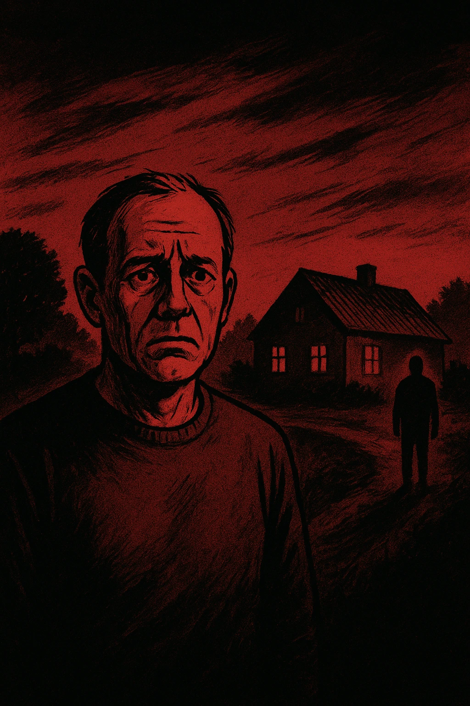
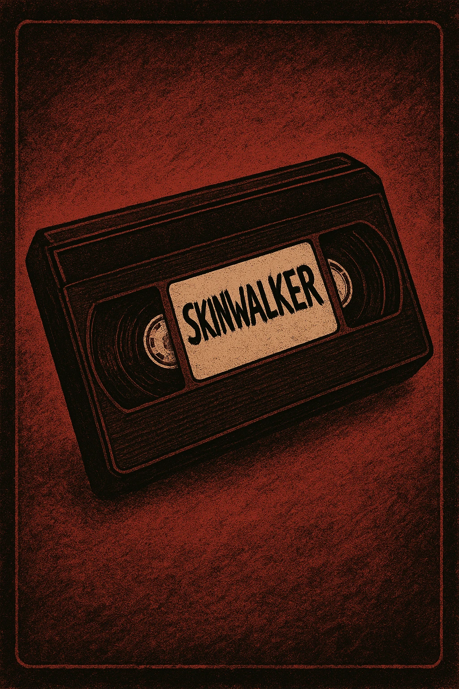

NÆRKONTAKT
Her ser du hvordan du kan genkendte Anomalies og kendte forskellen mellem rigtige mennesker og falske personer.
Se mereFind ud af hvordan DU kan beskytte din familie
Her ser du hvordan du kan genkendte Anomalies og kendte forskellen mellem rigtige mennesker og falske personer.
Se mereNoget er galt i Hvidbjerg: ‘Min nabo ser ud som sig selv – men det er ikke ham
Beboere i den lille landsby Hvidbjerg ved Lemvig fortæller om en urovækkende fornemmelse af, at folk ændrer sig – uden at nogen helt kan forklare hvorfor.
Det begyndte med små ting. En mand, der ikke længere hilste på sin nabo, en kvinde der glemte navnet på sin egen hund, et barn der kaldte sine forældre ved forkerte navne. I starten grinede folk af det. Men efter tre personer “forsvandt” og dukkede op igen uden hukommelse om dagene, de havde været væk, taler man i Hvidbjerg ikke længere højt om sagen.
Flere borgere har fortalt, at de oplever deres nærmeste som “anderledes”. 62-årige Kirsten Nielsen siger: “Min mand kom hjem efter at have været ude at fiske, men han… det var som om, han ikke kendte mig. Han smiler som min mand, men øjnene er forkerte.” Læger har ikke fundet nogen medicinsk forklaring. Politiet bekræfter, at der “ikke er tegn på forbrydelse”.
Kommunen har tilbudt psykologhjælp og kriseberedskab, men flere beboere nægter at forlade landsbyen. “Hvis vi går, hvem skal så se efter, om de stadig er mennesker?” spørger en lokal mand, der ønsker at være anonym.
Naturstyrelsen finder rituelle efterladenskaber i Mols Bjerge
Fund af hår, tøj og dyrespor i formationer har skabt frygt blandt lokale – men myndighederne afviser, at der er tale om noget overnaturligt.
Under en rutinemæssig oprydning i Mols Bjerge fandt skovarbejdere tidligere på måneden en række cirkler lavet af dyreknogler, menneskehår og bark. Fundet blev først tolket som en makaber spøg, men efter at tre parkbetjente rapporterede “menneskelignende væsner med dyriske bevægelser”, har sagen taget en uventet drejning.
Naturstyrelsen har udsendt en pressemeddelelse, hvor de kalder det hele “kunstneriske eksperimenter udført af lokale performancekunstnere”. Dog afviser de at kommentere, hvorfor flere overvågningskameraer i området er blevet ødelagt. En anonym biolog siger til os: “De mønstre, vi ser, minder ikke om menneskelig adfærd. Det er som om naturen selv forsøger at tage form.”
Flere lokale borgere nægter nu at gå i området efter solnedgang. Nogle har hørt lyde som menneskestemmer, der imiterer deres egne kald. “Jeg hørte mit eget navn ude fra skoven,” siger en vandrer. “Men det var ikke nogen stemme, jeg kendte.”
Myndigheder forvirrede: Identiske DNA-profiler fundet i Region Sjælland
Et teknologisk mysterium udfolder sig, efter at hospitaler opdager patienter med identisk DNA – men forskellige ansigter og minder.
Et hospital i Næstved slog alarm, da to patienter med forskellige navne og adresser viste sig at have 100 % identisk DNA. Siden er lignende tilfælde blevet rapporteret på hospitaler i Roskilde og Slagelse. Region Sjælland bekræfter, at der pågår en “intern teknisk undersøgelse”, men afviser at kommentere yderligere.
En anonym IT-tekniker fortæller, at problemerne begyndte, da en ny AI-baseret patientregistrering blev rullet ud i foråret. “Systemet begyndte at skabe ‘dobbeltprofiler’ – billeder, der lignede patienterne, men med små variationer. Vi troede, det var softwarefejl, men nu er der mennesker, der matcher dem.” Sundhedsmyndighederne overvejer, om nogen har fået adgang til genetiske databaser – eller noget værre.
En 34-årig kvinde fra Holbæk fortæller, at hun mødte en person, der “så ud, talte og bevægede sig som hende selv”. “Hun sagde, hun var mig. Hun vidste alt om mit liv – bare lidt anderledes.” Politiet efterforsker sagen som identitetssvindel, men lægerne insisterer på, at begge kvinder er biologisk identiske.